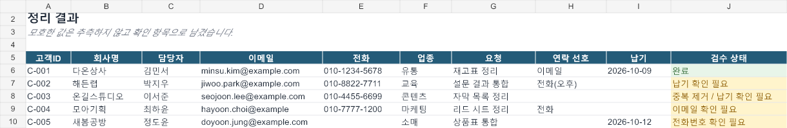

Messy business data, returned ready to use.
I clean and restructure spreadsheets where values sit in the wrong columns, useful details are buried in notes, or duplicate and inconsistent records block the next step.
You receive the cleaned file, a field-level change log, and a clear list of values that need your decision. Unclear data is flagged rather than guessed.
See the scopeWhat the delivery includes
Consistent fields and formats in the target structure you need.
A record of what changed, at the customer ID and field level.
Missing, conflicting, or ambiguous values separated for your decision.
Fictional demonstration
This example uses invented company and contact data. It demonstrates the process and is not presented as client work or a customer result.

How to request a scope check
Send the row and column count, file count, and the problem you need fixed.
Share only 10–20 redacted rows plus the target columns or an example layout.
I confirm the fixed scope, price, and delivery time before work begins.
Reply or DM on the platform where you found this page. Do not send passwords, account access, personal financial data, or confidential records during the scope check.
잘못된 열과 메모에 섞인 업무 데이터를 정리합니다.
목표 양식에 맞춘 정리 파일, 필드별 변경 기록, 확인이 필요한 값의 목록을 제공합니다. 근거가 부족한 값은 임의로 채우지 않습니다.
파일 1개, 최대 300행·15열, 목표 양식 1개, 합의된 규칙 3개와 범위 내 수정 1회를 기준으로 US$60입니다. 개인정보와 기밀을 제거한 10~20행 예시를 확인한 뒤 범위와 납기를 확정합니다.
AI-assisted analysis and checks are used in the workflow. Final output is reviewed against the supplied source. Service availability and payment method are confirmed before work begins.